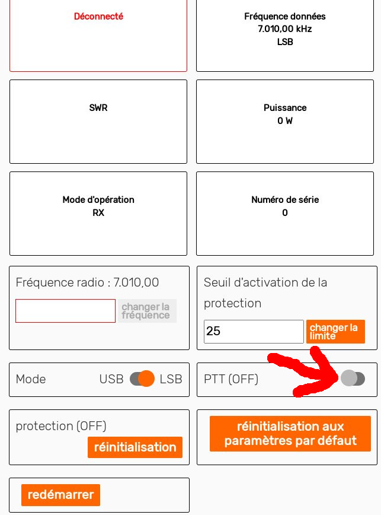

Next: E-mail setup and test Up: sBitx installation guide Previous: Radio Frequency (RF) connections Contents
After all the RF connections ready, a transmit test needs to be made. First, set a frequency in the band you will operate most the radio (Eg. 6200 kHz). Then two tests should be carried:
In order to log-in to the HERMES User Interface (UI), a default password is set (that can be changed), and it is:
To enter the voice screen in HERMES UI, follow the Figures 2.31 and 2.32.
The expected result of the voice test, when talking with normal voice level, should be the wattmeter having a oscilating power level, ranging from 0 to 40W.
In order to carry the single tone test, enter the radio configuration screen, as shown in Figure 2.33. The single tone functionality is enabled using the “PTT” button in the radio configuration page, as shown in Figure 2.34.
|
 |
The expected result of the single tone test, should be a power reading of approximatelly 20 W, as shown in Figures 2.35 and 2.36.